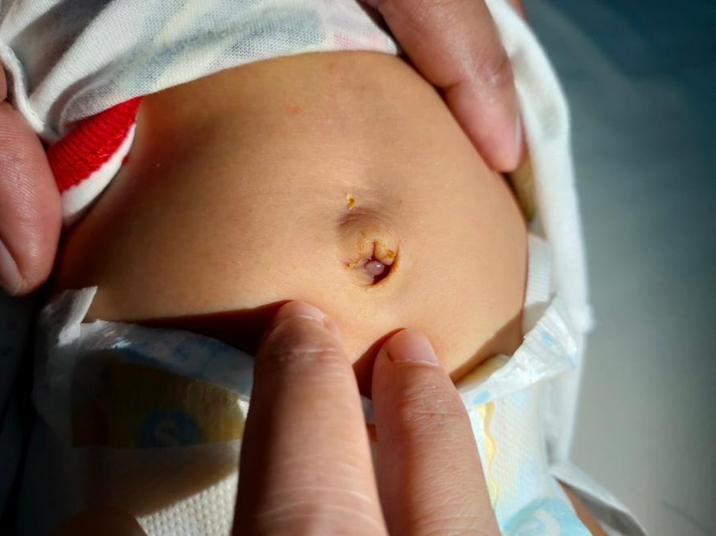

An umbilical cord granuloma is a small, soft, pink or red lump that can form in your baby’s belly button after the umbilical cord falls off. It may look moist and sometimes has a little clear or yellow fluid. This lump is made of soft tissue. It is common in newborns and should not cause pain or bother your baby.

After birth, your baby’s umbilical cord is cut, and a small stump is left. As this stump heals and falls off, sometimes the skin does not close all the way. Extra tissue can grow, leading to a granuloma.
Most of the time, there is no clear reason why this happens. It is not caused by anything you did or did not do.
There is a small, soft lump in the belly button area.
The lump is pink or red and may be moist.
The lump sometimes oozes a small amount of clear or yellow fluid.
Usually, it does not cause pain or fever.
The skin around the belly button looks normal.
If the area becomes red, swollen, smells bad, or your baby seems upset when you touch the area, these can be signs of infection. You should call your care team if this happens.
Your care team will look at your baby’s belly button and may gently touch the area. No special tests are usually needed. They will check for signs of infection or other problems.
Your baby’s care team can treat most umbilical cord granulomas easily and safely. Treatments include:
Observation: Many umbilical granulomas will heal by themselves within a week.
Silver nitrate: If the granuloma lasts longer than 1 week or seems to be getting worse, your care team may use a silver nitrate medicine in the office. This medicine helps dry up the tissue. Your baby will not feel pain during this treatment because the lump does not have nerves.
Other treatments: If the granuloma is large or does not heal, other treatments may be needed. These could include liquid nitrogen, tying the lump off with sutures, or minor surgery. If the granuloma is infected, your baby will need antibiotics and may need to be admitted to the hospital.
Keep your baby’s belly button clean and dry.
Clean the area with warm water and mild soap if it gets dirty.
Fold the diaper down so it does not cover the belly button.
Dress your baby in loose clothes to let air reach the area.
Give sponge baths instead of tub baths until the area heals.
Change diapers often to keep the area dry.
Follow your care team’s instructions for any treatments at home.
Most umbilical cord granulomas heal within a few days to a week with proper care. The lump will get smaller, change color, and dry up. The belly button should look normal once it heals. Most babies do not have any problems after treatment.
Call your care team if:
You have any questions or concerns about your baby’s belly button.
There is redness, swelling, or warmth around the belly button.
Your baby has a fever.
There is yellow, brown, or bloody drainage with a foul smell.
Your baby cries or seems in pain when you touch the area.
The lump does not get smaller after a week of treatment.
Your baby seems very fussy or unwell.
Get help right away if:
Your baby has a lot of bleeding from the belly button that does not stop.
Your baby is hard to wake up, very weak, or has trouble breathing.
There are signs of a serious infection, such as a fever over 100.4°F or 38°C, fast breathing, or your baby looks sick.
Thank you for trusting us with your child’s care. We are here to support you and want you and your child to feel your best. Contact us with any questions.
IF YOU HAVE A MEDICAL EMERGENCY, CALL 911 OR GO TO THE EMERGENCY ROOM.
The information presented is intended for general information and educational purposes. It is not intended to replace the advice of your health care provider. Contact your health care provider if you believe you have a health problem.
Last updated May 2025
© 2025 Mytonomy, Inc. All rights reserved.